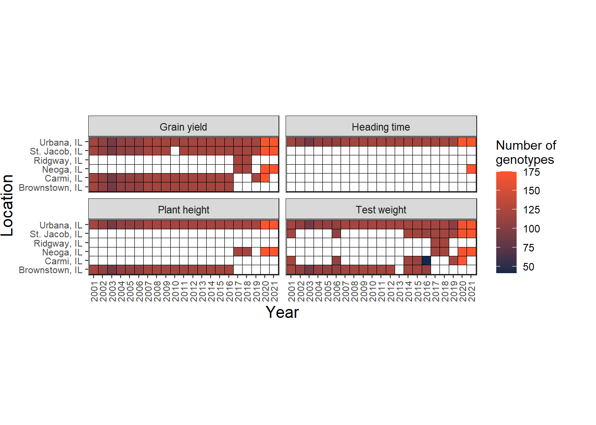
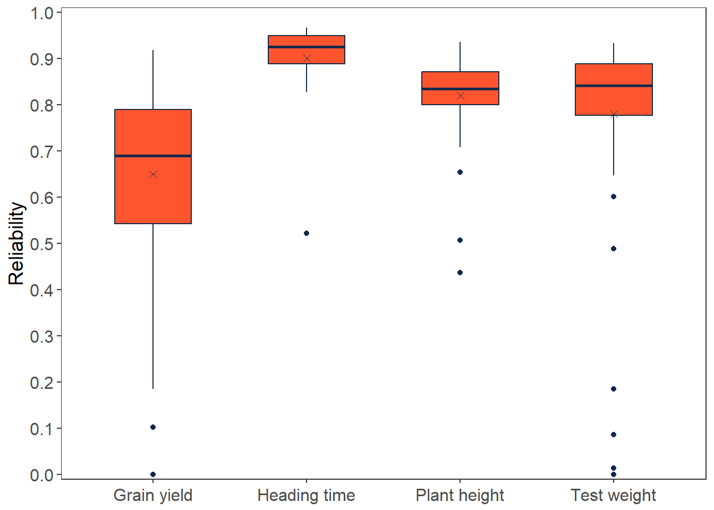
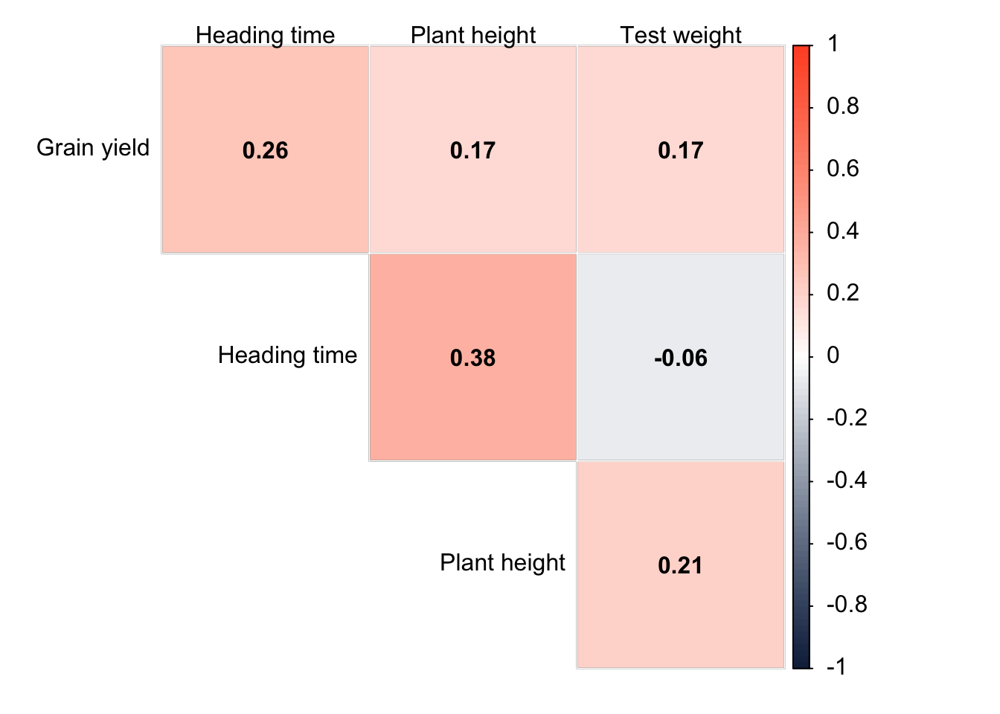
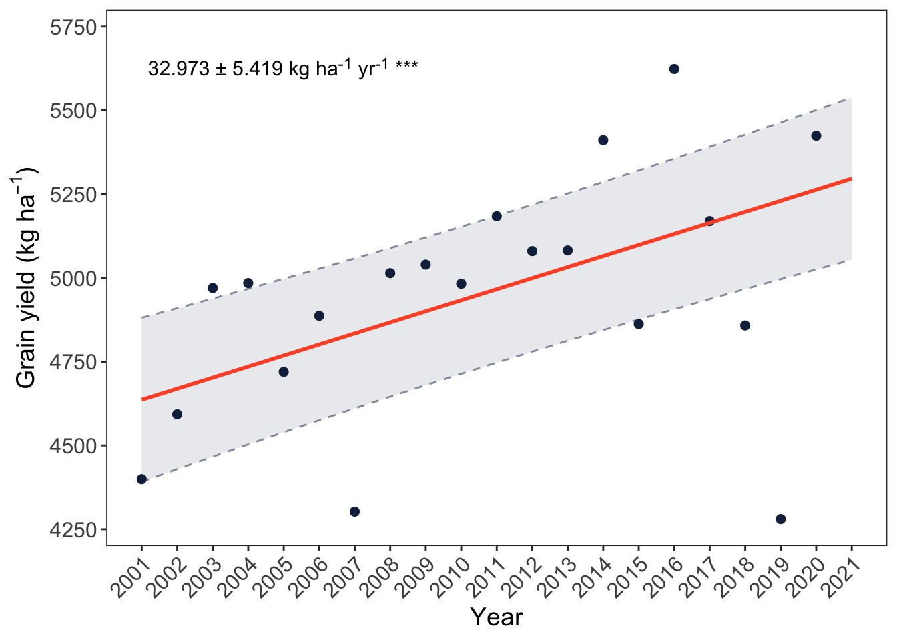
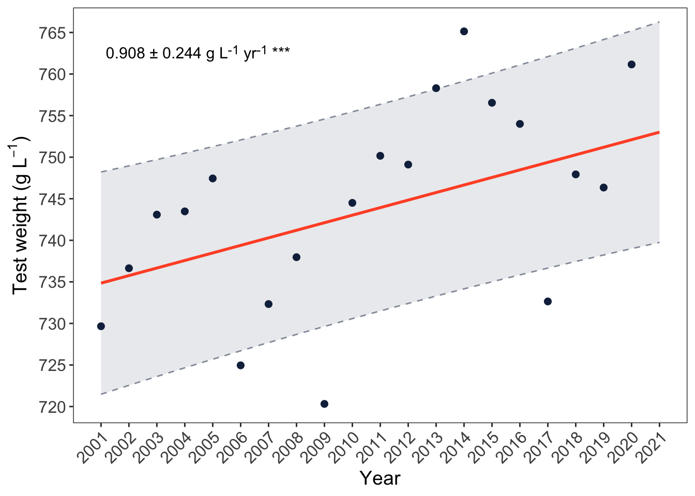
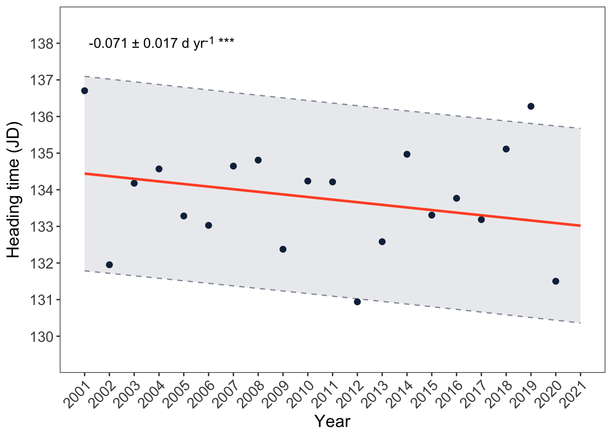
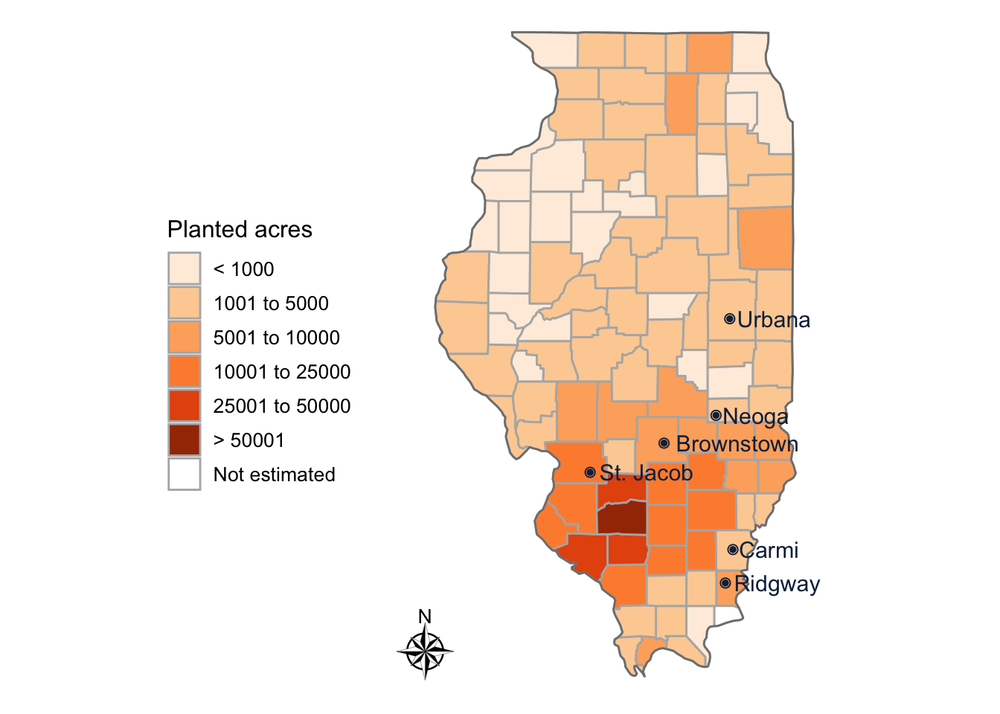

library(tidyverse) # R packages for data science
library(janitor) # Simple Tools for Examining and Cleaning Dirty Data
library(asreml) # ASReml-R package
library(asremlPlus) # Augments 'ASReml-R'
library(kableExtra) # Create HTML Table
library(corrplot) # A visualization of a correlation matrix
library(ggtext) # Improved text rendering support for ggplot2
asreml.options(trace=F, # Report convergence monitoring
maxit=250) # Maximum number of iterationsGenetic trends due to 21 years of winter wheat breeding in IL
Clean workspace
Packages
Phenotypic data
Raw data
Read, clean, and organize data from the Breedbase
dat1w <- #raw data wide format
read.csv('data/gen_trend_dat_2022nov10.csv', skip = 3) |>
remove_empty(which = c('cols')) |>#remove columns entirely empty
clean_names() |> # clean names
# select variables to be used
dplyr::select(observation_unit_name,study_name,study_year,location_name,
block_number, row_number, col_number, germplasm_name,
heading_time_julian_date_jd_co_321_0001233,
plant_height_cm_co_321_0001301,
grain_yield_kg_ha_co_321_0001218,
grain_test_weight_g_l_co_321_0001210) |>
# rename variables
rename(id=observation_unit_name,
year=study_year,
loc=location_name,
env=study_name,
blk=block_number,
row=row_number,
col=col_number,
gen=germplasm_name,
heading_time=heading_time_julian_date_jd_co_321_0001233,
plant_height=plant_height_cm_co_321_0001301,
grain_yield=grain_yield_kg_ha_co_321_0001218,
test_weight=grain_test_weight_g_l_co_321_0001210) |>
arrange(year,loc,gen,blk,row,col) |> #arrange data
# replace location name
mutate(loc = str_replace(loc,'St. Jacob Township, IL','St. Jacob, IL')) |>
# convert to factors
mutate_at(vars(id:gen),as.factor) |>
# convert to numeric
mutate_at(vars(heading_time:test_weight),as.numeric) |>
# replace 0 by NA for response variables
mutate_at(vars(heading_time:test_weight), ~ifelse(.==0,NA,.)) |>
# filter out AdvHY trials (Advanced High Yield trial)
filter(!grepl('AdvHY',env)) |>
# drop unused levels
droplevels() |>
glimpse()Rows: 27,884
Columns: 12
$ id <fct> Adv_Brt_01-plot1018, Adv_Brt_01-plot2016, Adv_Brt_01-plot…
$ env <fct> Adv_Brt_01, Adv_Brt_01, Adv_Brt_01, Adv_Brt_01, Adv_Brt_0…
$ year <fct> 2001, 2001, 2001, 2001, 2001, 2001, 2001, 2001, 2001, 200…
$ loc <fct> "Brownstown, IL", "Brownstown, IL", "Brownstown, IL", "Br…
$ blk <fct> 1, 2, 3, 1, 2, 3, 1, 2, 3, 1, 2, 3, 1, 2, 3, 1, 2, 3, 1, …
$ row <fct> NA, NA, NA, NA, NA, NA, NA, NA, NA, NA, NA, NA, NA, NA, N…
$ col <fct> NA, NA, NA, NA, NA, NA, NA, NA, NA, NA, NA, NA, NA, NA, N…
$ gen <fct> 87-2834-1, 87-2834-1, 87-2834-1, 94-1653, 94-1653, 94-165…
$ heading_time <dbl> NA, NA, NA, NA, NA, NA, NA, NA, NA, NA, NA, NA, NA, NA, N…
$ plant_height <dbl> 86.36, 91.44, 86.36, 78.74, 76.20, 68.58, 81.28, 78.74, 8…
$ grain_yield <dbl> 4573.062, 5548.200, 5198.495, 4445.285, 4727.739, 3443.24…
$ test_weight <dbl> 751.7237, 759.4469, 747.8621, 701.5230, 728.5541, 720.830…Raw data 1 long format
dat1l <- dat1w |> #raw data long format
pivot_longer(cols = heading_time:test_weight,
names_to = 'var', #variables
values_to = 'val', #values
values_drop_na = T) |>
mutate(var=as.factor(var)) |>
glimpse()Rows: 67,362
Columns: 10
$ id <fct> Adv_Brt_01-plot1018, Adv_Brt_01-plot1018, Adv_Brt_01-plot1018, Ad…
$ env <fct> Adv_Brt_01, Adv_Brt_01, Adv_Brt_01, Adv_Brt_01, Adv_Brt_01, Adv_B…
$ year <fct> 2001, 2001, 2001, 2001, 2001, 2001, 2001, 2001, 2001, 2001, 2001,…
$ loc <fct> "Brownstown, IL", "Brownstown, IL", "Brownstown, IL", "Brownstown…
$ blk <fct> 1, 1, 1, 2, 2, 2, 3, 3, 3, 1, 1, 1, 2, 2, 2, 3, 3, 3, 1, 1, 1, 2,…
$ row <fct> NA, NA, NA, NA, NA, NA, NA, NA, NA, NA, NA, NA, NA, NA, NA, NA, N…
$ col <fct> NA, NA, NA, NA, NA, NA, NA, NA, NA, NA, NA, NA, NA, NA, NA, NA, N…
$ gen <fct> 87-2834-1, 87-2834-1, 87-2834-1, 87-2834-1, 87-2834-1, 87-2834-1,…
$ var <fct> plant_height, grain_yield, test_weight, plant_height, grain_yield…
$ val <dbl> 86.3600, 4573.0619, 751.7237, 91.4400, 5548.2001, 759.4469, 86.36…Data summary
Number of observations per trait
Number of years (Year), locations (Loc), environments (Env), genotypes (Gen), total observations (Obs)
dat1l |>
group_by(var) |>
mutate(tot=length(id)) |>
summarise(nyear=length(unique(year)),
nloc=length(unique(loc)),
nenv=length(unique(env)),
ngen=length(unique(gen)),
tot=unique(tot)) |>
mutate(var=c('Grain yield', 'Heading time', 'Plant height', 'Test weight')) |>
write_csv("tables/table1.csv") |>
kbl(col.names = c('Phenotypic variable','No. Years','No. Loc',
'No. Env','No. Gen','No. Obs')) |>
kable_styling(full_width = F)| Phenotypic variable | No. Years | No. Loc | No. Env | No. Gen | No. Obs |
|---|---|---|---|---|---|
| Grain yield | 21 | 6 | 81 | 1690 | 27842 |
| Heading time | 21 | 2 | 22 | 1690 | 7534 |
| Plant height | 21 | 3 | 41 | 1690 | 14004 |
| Test weight | 21 | 6 | 59 | 1690 | 17982 |
nrow(dat1l)[1] 67362#|fig.height=4, fig.width=12
dat1l |>
group_by(year,loc,var) |>
summarise(no_gen=length(unique(gen))) |>
pivot_wider(names_from = loc,
values_from = no_gen) |>
pivot_longer(names_to = 'loc',
values_to = 'no_gen',
cols = 3:8) |>
ggplot(aes(year,loc)) +
geom_tile(aes(fill=no_gen), color='black', na.rm = T) +
facet_wrap(~var,
labeller=labeller(var=c('grain_yield'='Grain yield',
'heading_time'='Heading time',
'plant_height'='Plant height',
'test_weight'='Test weight'))) +
scale_fill_gradient(name = 'Number of \ngenotypes',
high = '#FF552E', low = '#13294B',
na.value='white') +
xlab('Year') + ylab('Location') +
coord_equal() +
theme_bw() +
theme(axis.text.x = element_text(angle = 90, hjust=0.5, vjust=0.5, size = 8),
plot.margin = margin(10,25,0,0),
axis.text.y = element_text(size = 8),
axis.title.x = element_text(size = 14),
axis.title.y = element_text(size = 14), panel.grid = element_blank())`summarise()` has grouped output by 'year', 'loc'. You can override using the
`.groups` argument.
ggsave("figures/traits_loc.tiff", width = 6.5, height = 4, units = "in", dpi=320)Single trial analysis
Single trial analysis, within trial or environment
BLUP model
BLUP models to calculate blup for each genotype within trial, blups will be used to calculate reliability
Model
mod.blups <-
function(dat){
yr <- unique(as.character(dat$year)) # year being analyzed
if('2021' %in% yr){
# Model for 2021 (including row and column)
mod <- asreml(fixed = val~1+blk,
random = ~gen+row+col,
data = dat, na.action = na.method(y='include', x='include'))
}else{
# Model for other years (2001 to 2020)
mod <- asreml(fixed = val~1+blk,
random = ~gen,
data = dat, na.action = na.method(y='include', x='include'))
}
# Update model
mod <- update(mod)
# Blups
blups<- predict(mod, classify='gen', ignore=c('(Intercept)','blk'))$pvals
# Prediction error variance
pev<- blups[,'std.error']^2
# Genetic variance
Vg<- summary(mod)$varcomp['gen','component']
# Reliability for each gen
rel<- 1-(pev/Vg)
# Mean reliability
m_rel<- mean(rel)
# Result
res<- data.frame(m_rel=m_rel)
# Result that will be printed
return(res)
}Run model:
out_blups <- dat1l|> # raw data long format
# group by env and var
group_by(env,var) |>
# number of blocks within env and var
mutate(no_blk=length(unique(blk))) |>
# remove the ones with only one block
filter(no_blk>1) |>
# remove no_blk column
dplyr::select(-no_blk) |>
nest() |>
# run the model for each combination of env and var using the function
mutate(blups=map(data,
~mod.blups(.x))) |>
# unnest reliability
unnest_wider(blups) |>
ungroup() |>
# round reliability
mutate_if(is.numeric,~round(.,3)) |>
glimpse()Warning: There were 2 warnings in `mutate()`.
The first warning was:
ℹ In argument: `blups = map(data, ~mod.blups(.x))`.
ℹ In group 79: `env = Adv_Neo_20`, `var = test_weight`.
Caused by warning in `asreml()`:
! Some components changed by more than 1% on the last iteration
ℹ Run `dplyr::last_dplyr_warnings()` to see the 1 remaining warning.Rows: 198
Columns: 4
$ env <fct> Adv_Brt_01, Adv_Brt_01, Adv_Brt_01, Adv_Car_01, Adv_Stj_01, Adv_…
$ var <fct> plant_height, grain_yield, test_weight, grain_yield, grain_yield…
$ data <list> [<tbl_df[360 x 8]>], [<tbl_df[342 x 8]>], [<tbl_df[360 x 8]>], …
$ m_rel <dbl> 0.708, 0.321, 0.806, 0.798, 0.708, 0.952, 0.866, 0.768, 0.866, 0…out_blups |>
dplyr::select(-c(data)) |>
group_by(var) |>
summarise(min=min(m_rel),
max=max(m_rel),
mean=mean(m_rel),
median=(median(m_rel))) |>
mutate_if(is.numeric, ~round(.,2))# A tibble: 4 × 5
var min max mean median
<fct> <dbl> <dbl> <dbl> <dbl>
1 grain_yield 0 0.92 0.65 0.69
2 heading_time 0.52 0.97 0.9 0.92
3 plant_height 0.44 0.94 0.82 0.83
4 test_weight 0 0.93 0.78 0.84Boxplot - single trial reliability
Boxplot showing the reliability
out_blups |>
dplyr::select(-c(data)) |>
group_by(var) |>
mutate(mrel=format(round(mean(m_rel),2),nsmall=2)) |>
ggplot(aes(x=var,y=m_rel)) +
geom_boxplot(fill='#FF552E',color='#13294B',width=0.5) +
geom_point(aes(y=as.numeric(mrel)),shape=4, size=2, color='#13294B') +
ylab("Reliability") +
scale_y_continuous(breaks = seq(0,1,by=0.1),limits=c(0,1),expand=c(0.01,0)) +
xlab(NULL) +
scale_x_discrete(labels=c('Grain yield','Heading time',
'Plant height','Test weight')) +
theme_bw() +
theme(axis.text.x = element_text(angle = 0, hjust=0.5, vjust=0.5, size = 12),
axis.text.y = element_text(size = 12),
axis.title.x = element_text(size = 14),
axis.title.y = element_text(size = 14),
legend.position = 'none', panel.grid = element_blank())
ggsave("figures/r2.tiff", width = 6, height = 4, units = "in", dpi=320)BLUE model
Estimate genotype blues and weights within each trial
Model::
mod.blues <- # Function name
function(dat){
yr <- unique(as.character(dat$year)) # year being analyzed
if('2021' %in% yr){
# Model for 2021 (including row and column)
mod <- asreml(fixed = val~1+gen+blk,
random = ~row+col,
data = dat,
na.action = na.method(y='include', x='include'))
}else{
# Model for other years (2001 to 2020)
mod <- asreml(fixed = val~1+gen+blk,
data = dat,
na.action = na.method(y='include', x='include'))
}
# Update model
mod <- update(mod)
# Blues
blues<- predict(mod, classify='gen')$pvals
# Result
return(blues)
}Run model and organize output:
out_blues <- # create df with blues
out_blups |> # previous model output
# unnest draw data used in previous model
unnest(data) |>
# group by env and var
group_by(env,var) |>
# nest by each combination of env and var
nest() |>
# run the model for each combination of env and var using the function
mutate(blues=map(data,
~mod.blues(.x))) |>
# remove raw data
dplyr::select(-data) |>
# unnest blues
unnest(blues) |>
# clean and rename variables
clean_names() |>
rename(prd_val=predicted_value) |>
# remove status column
dplyr::select(-status) |>
# add year and location columns by env
left_join(dat1l |>
group_by(env) |>
summarise(year=unique(year),
loc=unique(loc)),
by='env') |>
glimpse()Warning: There was 1 warning in `mutate()`.
ℹ In argument: `blues = map(data, ~mod.blues(.x))`.
ℹ In group 196: `env = Adv_Urb_21`, `var = heading_time`.
Caused by warning in `asreml()`:
! Some components changed by more than 1% on the last iterationRows: 24,059
Columns: 7
Groups: env, var [198]
$ env <fct> Adv_Brt_01, Adv_Brt_01, Adv_Brt_01, Adv_Brt_01, Adv_Brt_01, …
$ var <fct> plant_height, plant_height, plant_height, plant_height, plan…
$ gen <fct> 87-2834-1, 94-1653, 94-1909, 94-2529W, 94-2667, 94-6522, 94-…
$ prd_val <dbl> 88.05333, 74.50667, 82.12667, 75.35333, 77.89333, 79.58667, …
$ std_error <dbl> 2.974737, 2.974737, 2.974737, 2.974737, 2.974737, 2.974737, …
$ year <fct> 2001, 2001, 2001, 2001, 2001, 2001, 2001, 2001, 2001, 2001, …
$ loc <fct> "Brownstown, IL", "Brownstown, IL", "Brownstown, IL", "Brown…Test weight imputation
In 5 trials test weight was evaluated in only one replication. Because of that it was excluded from the single trials models. To be able to add these observations to the genetic trend analyses we used the test weight from the single replication and the average standard error from all trials before 2014. We did not use data from 2014 and later because the measurement method was different and all trials with information from only one replication were prior to 2014.
Trials with test weight data from only one replication
dat1l|>
group_by(env,var) |>
mutate(no_blk=length(unique(blk))) |>
filter(no_blk==1) |>
ungroup() |>
group_by(year, loc) |>
summarise() |>
ungroup() |>
droplevels() |>
glimpse()`summarise()` has grouped output by 'year'. You can override using the
`.groups` argument.Rows: 5
Columns: 2
$ year <fct> 2001, 2001, 2006, 2006, 2013
$ loc <fct> "Carmi, IL", "St. Jacob, IL", "Carmi, IL", "St. Jacob, IL", "Urba…Average standard error for test weight standard error from 2001 to 2013 for imputation
tw.std_error <- out_blues |>
ungroup() |>
filter(var=='test_weight'&as.numeric(as.character(year))<2014) |>
summarise(se=sqrt(mean((std_error^2)*3))) |>
unlist(use.names = F)Create a long format data set with blues and standard errors
blues <- # long format df with blues and standard errors
out_blues |> # blues output
# add trials with test weight data from only one block and mean standard error
bind_rows(dat1l|>
group_by(env,var) |>
mutate(no_blk=length(unique(blk))) |>
filter(no_blk==1) |>
mutate(prd_val=val,
std_error=tw.std_error) |>
dplyr::select(env,var,gen,prd_val,std_error,year,loc)) |>
# group by gen to create new columns and organize the data
group_by(gen) |>
mutate(gen=as.factor(gen), # change to factor
# create gidyr (first year the genotype entered the trial)
gidyr=min(as.numeric(as.character(year))),
# first year 2001 we consider IL-98 lines as first entry
gidyr=ifelse(gidyr!=2001,gidyr,ifelse(grepl('^98',gen),2001,NA)),
# add NA to gidyr of gen we will exclude from the analysis
## NA if not starts with number (not IL)
gidyr=ifelse(!grepl('^\\d',gen),NA,gidyr),
#IL gen that starts with US
gidyr=ifelse(grepl('^US',gen),
min(as.numeric(as.character(year))),gidyr),
gidyr=ifelse(grepl('B-B',gen),NA,gidyr), # (not IL)
gidyr=ifelse(grepl('^96',gen),NA,gidyr), # (first entered before 2001)
gidyr=ifelse(grepl('^97',gen),NA,gidyr), # (first entered before 2001)
## gidyr for Kaskaskia = 1993 based on the line name (90-7514)
gidyr=ifelse(gen=='Kaskaskia',1993,gidyr),
gidyr=as.factor(gidyr), # change to factor
year_n=as.numeric(as.character(year)), # numeric year
gidyr_n=as.numeric(as.character(gidyr)), # numeric gidyr
wt=(1/(std_error^2)))|> # weights to include in the models
ungroup() |> # ungroup
dplyr::select(env,year,year_n,loc,gen,#check,check_f,
gidyr,gidyr_n,
var,prd_val,std_error,wt) |> # select variables
arrange(year,loc,gen,var) |> # arrange data
droplevels.data.frame()Genetic correlation among traits
Data
Include the NA’s to the blues data set for the genetic correlation model
blues.na <- blues |>
dplyr::select(-c(std_error,wt)) |> # filter out to make it easier to pivot wider
pivot_wider(values_from = prd_val, names_from = var) |> #pivot wider (add NA)
pivot_longer(names_to='var', values_to='prd_val',
cols=c(grain_yield:heading_time),
values_drop_na = F) |> # pivot longer without dropping NA's
left_join(blues) |> # add back std_error and weights
mutate_if(is.character,as.factor) |>
arrange(var,env,gen) |>
glimpse()Joining with `by = join_by(env, year, year_n, loc, gen, gidyr, gidyr_n, var,
prd_val)`Rows: 39,172
Columns: 11
$ env <fct> Adv_Brt_01, Adv_Brt_01, Adv_Brt_01, Adv_Brt_01, Adv_Brt_01, …
$ year <fct> 2001, 2001, 2001, 2001, 2001, 2001, 2001, 2001, 2001, 2001, …
$ year_n <dbl> 2001, 2001, 2001, 2001, 2001, 2001, 2001, 2001, 2001, 2001, …
$ loc <fct> "Brownstown, IL", "Brownstown, IL", "Brownstown, IL", "Brown…
$ gen <fct> 87-2834-1, 94-1653, 94-1909, 94-2529W, 94-2667, 94-6522, 94-…
$ gidyr <fct> NA, NA, NA, NA, NA, NA, NA, NA, NA, NA, NA, NA, NA, NA, NA, …
$ gidyr_n <dbl> NA, NA, NA, NA, NA, NA, NA, NA, NA, NA, NA, NA, NA, NA, NA, …
$ var <fct> grain_yield, grain_yield, grain_yield, grain_yield, grain_yi…
$ prd_val <dbl> 5106.586, 4205.424, 5160.387, 4308.542, 4763.606, 5303.855, …
$ std_error <dbl> 334.7391, 334.7391, 334.7391, 334.7391, 334.7391, 334.7391, …
$ wt <dbl> 8.924569e-06, 8.924569e-06, 8.924569e-06, 8.924569e-06, 8.92…Model
Multi-trait model for the genetic correlations among traits
mt_mod <- asreml(fixed = prd_val~var,
random = ~us(var):gen + env:var + gen:env:var,
family=asr_gaussian(dispersion = 1),
residual= ~units:var,
na.action = na.method(y='include', x='include'),
asmv=var, data=blues.na, weights=wt,
workspace='1gb')Warning in asreml(fixed = prd_val ~ var, random = ~us(var):gen + env:var + :
Warning : US updates modified 1 times in iteration 1 to remain positive
definite.Warning in asreml(fixed = prd_val ~ var, random = ~us(var):gen + env:var + :
Warning : US updates modified 1 times in iteration 2 to remain positive
definite.Warning in asreml(fixed = prd_val ~ var, random = ~us(var):gen + env:var + :
Warning : US updates modified 1 times in iteration 3 to remain positive
definite.Warning in asreml(fixed = prd_val ~ var, random = ~us(var):gen + env:var + :
Warning : No EM update of constrained US structure
Warning in asreml(fixed = prd_val ~ var, random = ~us(var):gen + env:var + :
Warning : No EM update of constrained US structureWarning in asreml(fixed = prd_val ~ var, random = ~us(var):gen + env:var + :
Warning : US updates modified 1 times in iteration 4 to remain positive
definite.Warning in asreml(fixed = prd_val ~ var, random = ~us(var):gen + env:var + :
Warning : No EM update of constrained US structure
Warning in asreml(fixed = prd_val ~ var, random = ~us(var):gen + env:var + :
Warning : No EM update of constrained US structureWarning in asreml(fixed = prd_val ~ var, random = ~us(var):gen + env:var + :
Warning : US updates modified 1 times in iteration 5 to remain positive
definite.Warning in asreml(fixed = prd_val ~ var, random = ~us(var):gen + env:var + :
Warning : No EM update of constrained US structure
Warning in asreml(fixed = prd_val ~ var, random = ~us(var):gen + env:var + :
Warning : No EM update of constrained US structureWarning in asreml(fixed = prd_val ~ var, random = ~us(var):gen + env:var + :
Warning : US updates modified 1 times in iteration 6 to remain positive
definite.Warning in asreml(fixed = prd_val ~ var, random = ~us(var):gen + env:var + :
Warning : No EM update of constrained US structureWarning in asreml(fixed = prd_val ~ var, random = ~us(var):gen + env:var + :
Warning : US updates modified 1 times in iteration 7 to remain positive
definite.Warning in asreml(fixed = prd_val ~ var, random = ~us(var):gen + env:var + :
Warning : No EM update of constrained US structuremt_mod <- update(mt_mod)Extract variance components
Convert variance components into a matrix
# Extract unique variables
var <- as.vector(unique(blues.na$var))
mat_varcomp <-
as.data.frame(summary(mt_mod)$varcomp) |> # Get variance components
dplyr::select(component) |> # Select the column containing the variance components
rownames_to_column('varcomp') |> # Convert row names to a separate column
filter(str_detect(varcomp, paste(var, collapse = '|'))) |> # Filter rows that contain variables
mutate(varcomp=str_replace_all(varcomp,'var:gen!var_','')) |> # Replace specific patterns
separate(varcomp, c('var1','var2'),sep = ':') |> # Split the 'varcomp' column into two separate columns
spread(var2,component) |> # Spread the 'component' values into separate columns
column_to_rownames('var1') |> # Use 'var1' column as row names
as.matrix() |> # Convert the resulting data frame to a matrix
t() # Transpose the matrix
mat_varcomp grain_yield heading_time plant_height test_weight
grain_yield 100592.5 148.668876 212.852659 727.639149
heading_time NA 3.221801 2.676113 -1.481284
plant_height NA NA 15.572863 10.923881
test_weight NA NA NA 180.404697Function to calculate genetic correlations from the matrix of variance components
# Function to calculate genetic correlations
calc_gen_corr <- function(mat) {
# Get the number of rows in the matrix
n <- nrow(mat)
# Create a square matrix to store the genetic correlations, initialized with 1's
genetic_corr_mat <- matrix(1, nrow = n, ncol = n,
dimnames = list(rownames(mat), colnames(mat))) # Set the row and column names
for (i in 1:(n - 1)) { # Loop over the rows of the matrix (excluding the last row)
for (j in (i + 1):n) { # Loop over the columns of the matrix starting from i+1 to n
genetic_corr <- mat[i, j] / (sqrt(mat[i, i]) * sqrt(mat[j, j])) # Calculate the genetic correlation
# Assign the calculated genetic correlation to the corresponding cell in the upper triangle of the matrix
genetic_corr_mat[i, j] <- genetic_corr
# Assign the same value to the corresponding cell in the lower triangle of the matrix
genetic_corr_mat[j, i] <- genetic_corr
}
}
return(genetic_corr_mat) # Return the matrix containing the genetic correlations
}
# Calculate genetic correlations
genetic_corr <- calc_gen_corr(mat_varcomp) # Call the function with the input matrix
genetic_corr grain_yield heading_time plant_height test_weight
grain_yield 1.0000000 0.26114865 0.1700638 0.17080840
heading_time 0.2611487 1.00000000 0.3778077 -0.06144196
plant_height 0.1700638 0.37780767 1.0000000 0.20609564
test_weight 0.1708084 -0.06144196 0.2060956 1.00000000Figure
colnames(genetic_corr) <- c('Grain yield','Heading time',
'Plant height','Test weight')
rownames(genetic_corr) <- c('Grain yield','Heading time',
'Plant height','Test weight')
# Define a color palette transitioning from orange to blue
my_palette <- colorRampPalette(c("#13294B", "white","#FF552E"))(n = 100)
# Plot the correlation matrix with the specified color palette
tiff("figures/gen_corr.tiff", width = 6, height = 4, units = "in", res = 320)
corrplot(genetic_corr, method = "color", type = "upper", addCoef.col = TRUE,
addgrid = FALSE, outline = "black",
tl.cex = 1, tl.srt = 0, tl.col = "black",
cl.cex = 1, cl.align.text = "l",
number.cex = 1,
diag = FALSE, mar = c(0.2, 0.2, 0.2, 0.2),
col = my_palette)
dev.off()quartz_off_screen
2 corrplot(genetic_corr, method = "color", type = "upper", addCoef.col = TRUE,
addgrid = FALSE, outline = "black",
tl.cex = 1, tl.srt = 0, tl.col = "black",
cl.cex = 1, cl.align.text = "l",
number.cex = 1,
diag = FALSE, mar = c(0.2, 0.2, 0.2, 0.2),
col = my_palette)
Trend analysis
Data
dat_trend_21yr <-
blues |> # blues from single trial analysis
mutate(check=ifelse(gen=='Kaskaskia',T,F), # Assign check & entry genotypes
check_f=as.factor(check)) |> # Check as factor
filter(!is.na(gidyr)|check==T) |> # Remove genotypes without gidyr
filter(check==T|year_n==gidyr_n) |> # filter checks & entries to keep entry data only for the first year it was tested
glimpse()Rows: 15,313
Columns: 13
$ env <fct> Adv_Brt_01, Adv_Brt_01, Adv_Brt_01, Adv_Brt_01, Adv_Brt_01, …
$ year <fct> 2001, 2001, 2001, 2001, 2001, 2001, 2001, 2001, 2001, 2001, …
$ year_n <dbl> 2001, 2001, 2001, 2001, 2001, 2001, 2001, 2001, 2001, 2001, …
$ loc <fct> "Brownstown, IL", "Brownstown, IL", "Brownstown, IL", "Brown…
$ gen <fct> 98-11276W, 98-11276W, 98-11276W, 98-11442, 98-11442, 98-1144…
$ gidyr <fct> 2001, 2001, 2001, 2001, 2001, 2001, 2001, 2001, 2001, 2001, …
$ gidyr_n <dbl> 2001, 2001, 2001, 2001, 2001, 2001, 2001, 2001, 2001, 2001, …
$ var <fct> grain_yield, plant_height, test_weight, grain_yield, plant_h…
$ prd_val <dbl> 4992.25927, 78.74000, 737.99358, 4472.18556, 80.43333, 711.8…
$ std_error <dbl> 334.739054, 2.974737, 6.180723, 334.739054, 2.974737, 6.1807…
$ wt <dbl> 8.924569e-06, 1.130063e-01, 2.617710e-02, 8.924569e-06, 1.13…
$ check <lgl> FALSE, FALSE, FALSE, FALSE, FALSE, FALSE, FALSE, FALSE, FALS…
$ check_f <fct> FALSE, FALSE, FALSE, FALSE, FALSE, FALSE, FALSE, FALSE, FALS…Models
Toy data used to create and test the function
dat<- dat_trend_21yr|>filter(var=='grain_yield') |>
glimpse()Rows: 6,047
Columns: 13
$ env <fct> Adv_Brt_01, Adv_Brt_01, Adv_Brt_01, Adv_Brt_01, Adv_Brt_01, …
$ year <fct> 2001, 2001, 2001, 2001, 2001, 2001, 2001, 2001, 2001, 2001, …
$ year_n <dbl> 2001, 2001, 2001, 2001, 2001, 2001, 2001, 2001, 2001, 2001, …
$ loc <fct> "Brownstown, IL", "Brownstown, IL", "Brownstown, IL", "Brown…
$ gen <fct> 98-11276W, 98-11442, 98-11551, 98-11649, 98-12071, 98-12141,…
$ gidyr <fct> 2001, 2001, 2001, 2001, 2001, 2001, 2001, 2001, 2001, 2001, …
$ gidyr_n <dbl> 2001, 2001, 2001, 2001, 2001, 2001, 2001, 2001, 2001, 2001, …
$ var <fct> grain_yield, grain_yield, grain_yield, grain_yield, grain_yi…
$ prd_val <dbl> 4992.259, 4472.186, 4153.865, 4745.673, 4220.083, 4239.049, …
$ std_error <dbl> 334.7391, 334.7391, 334.7391, 334.7391, 410.6393, 334.7391, …
$ wt <dbl> 8.924569e-06, 8.924569e-06, 8.924569e-06, 8.924569e-06, 5.93…
$ check <lgl> FALSE, FALSE, FALSE, FALSE, FALSE, FALSE, FALSE, FALSE, FALS…
$ check_f <fct> FALSE, FALSE, FALSE, FALSE, FALSE, FALSE, FALSE, FALSE, FALS…Function to run the genetic, environmental, and phenotypic trends
mod.trends <-
function(dat){
var <- unique(as.character(dat$variable)) # variable being analyzed
if('heading_time' %in% var) { # models for heading time
# Genetic trend
mod_gen <- asreml(fixed=prd_val ~gidyr_n + check_f,
random=~year + at(year,'2021'):gen + at(year,'2021'):loc,
weights=wt, family=asr_gaussian(dispersion=1),
na.action=na.method('omit'), data=dat)
mod_gen <- update(mod_gen)
## Point estimates of gidyr
mod_gen_pt <- asreml(fixed=prd_val ~gidyr + check_f,
random=~year+at(year,'2021'):gen+at(year,'2021'):loc,
weights=wt, family=asr_gaussian(dispersion=1),
na.action=na.method('omit'), data=dat)
mod_gen_pt <- update(mod_gen_pt)
# Environmental trend - check only
mod_env <- asreml(fixed=prd_val ~year_n,
random=~at(year,'2021'):gen+at(year,'2021'):loc,
weights=wt, family=asr_gaussian(dispersion=1),
na.action=na.method('omit'),data=dat|>filter(check==T))
mod_env <- update(mod_env)
# Phenotypic trend - entry only
mod_pheno <- asreml(fixed=prd_val ~gidyr_n,
random=~at(year,'2021'):gen+at(year,'2021'):loc,
weights=wt, family=asr_gaussian(dispersion=1),
na.action=na.method('omit'),data=dat|>filter(check==F))
mod_pheno <- update(mod_pheno)
}else{ # models for grain yield, test weight, and plant height
# Genetic trend
mod_gen <- asreml(fixed=prd_val~ gidyr_n+ check_f + loc + check_f:loc,
random=~ year + gen:year + gen:loc,
weights=wt, family=asr_gaussian(dispersion=1),
na.action=na.method('omit'), data=dat)
mod_gen <- update(mod_gen)
## Point estimates of gidyr
mod_gen_pt <- asreml(fixed=prd_val~ gidyr+ check_f + loc + check_f:loc,
random=~ year + gen:year + gen:loc,
weights=wt, family=asr_gaussian(dispersion=1),
na.action=na.method('omit'), data=dat)
mod_gen_pt <- update(mod_gen_pt)
# Environmental trend - check only
mod_env <- asreml(fixed=prd_val~ year_n,
random=~ loc:year + gen:loc + gen:year,
weights=wt, family=asr_gaussian(dispersion=1),
na.action=na.method('omit'),
data=dat|>filter(check==T))
mod_env <- update(mod_env)
# Phenotypic trend - entry only
mod_pheno <- asreml(fixed=prd_val~ gidyr_n + loc,
random=~ year + gen:loc + gen:year,
weights=wt, family=asr_gaussian(dispersion=1),
na.action=na.method('omit'),
data=dat|>filter(check==F))
mod_pheno <- update(mod_pheno)
}
# Genetic trend figure data
## Predict genetic trend line
gen_line <- predict(mod_gen, classify='gidyr_n:check_f',
levels=list(check_f="FALSE",
gidyr_n=c(unique(dat$year_n))))$pvals |>
as.data.frame() |> clean_names() |>
rename(pval_line=predicted_value, se_line=std_error) |>
mutate(gidyr=factor(gidyr_n),
ci1=pval_line+1.96*se_line, ci2=pval_line-1.96*se_line)
## Predict genetic trend points
gen_pts <- predict(mod_gen_pt, classify='gidyr:check_f',
levels=list(check_f="FALSE",
gidyr=factor(c(unique(dat$year_n)))))$pvals |>
as.data.frame() |>clean_names() |>
rename(pval_point=predicted_value,se_point=std_error)
## Join trend line and point predictions
dat_gen_trend <- left_join(gen_line, gen_pts) |>
nest(dat_gen_trend=everything())
# Wald test of fixed effects
## Function to convert asreml wald to df
wald_df <- function(mod,trend){
aov_df <- wald(mod) |> as.data.frame() |> rownames_to_column('term') |>
mutate(trend=trend) |> relocate(trend)
return(aov_df)
}
## Bind all trends to the same df
wald <- bind_rows(wald_df(mod_gen,'gen'),
wald_df(mod_env,'env'),
wald_df(mod_pheno,'pheno'))
# Fixed effects estimates
## Function to convert asreml summary to df
fixeff_df <- function(mod,trend){
fixeff_df <- summary(mod, coef=TRUE)$coef.fixed |> as.data.frame() |>
rownames_to_column('term') |> mutate(trend=trend) |> relocate(trend)
return(fixeff_df)
}
## Bind all trends to the same df
coef_fixeff <- bind_rows(fixeff_df(mod_gen,'gen'),
fixeff_df(mod_env,'env'),
fixeff_df(mod_pheno,'pheno'))
## Raw fixed effects
raw_fixeff <- bind_rows(list(wald=wald,coef_fixeff=coef_fixeff),.id='id') |>
clean_names()|>nest(raw_fixeff=everything())
## Summarized fixed effects
fixeff <- full_join(wald,coef_fixeff,by=c('trend', 'term')) |>
clean_names() |> filter(!grepl('Intercept|residual',term)) |>
select(-c(sum_of_sq,z_ratio)) |> nest(fixeff=everything())
# Variance components
## Function to convert varcomp to df
varcomp_df <- function(mod,trend){
varcomp_df <- summary(mod)$varcomp |> as.data.frame() |>
rownames_to_column('term') |> mutate(trend=trend) |> relocate(trend)
return(varcomp_df)
}
## Bind rows
varcomp <- bind_rows(varcomp_df(mod_gen,'gen'),
varcomp_df(mod_env,'env'),
varcomp_df(mod_pheno,'pheno')) |>
clean_names() |> nest(varcomp=everything())
return(data.frame(dat_gen_trend=dat_gen_trend,
fixeff=fixeff,
varcomp=varcomp))
}Run the model for all variables
out_trend <- dat_trend_21yr |>
mutate(variable=as.character(var)) |>
group_by(var) |>
nest() |>
mutate(trends=map(data,
~mod.trends(.x))) |>
dplyr::select(-data) |>
unnest(trends) |>
ungroup()Terms with zero df listed in attribute 'zerodf' of the wald table.
Terms with zero df listed in attribute 'zerodf' of the wald table.
Terms with zero df listed in attribute 'zerodf' of the wald table.Joining with `by = join_by(check_f, status, gidyr)`
Terms with zero df listed in attribute 'zerodf' of the wald table.
Terms with zero df listed in attribute 'zerodf' of the wald table.
Terms with zero df listed in attribute 'zerodf' of the wald table.
Joining with `by = join_by(check_f, status, gidyr)`
Terms with zero df listed in attribute 'zerodf' of the wald table.
Terms with zero df listed in attribute 'zerodf' of the wald table.
Terms with zero df listed in attribute 'zerodf' of the wald table.
Joining with `by = join_by(check_f, status, gidyr)`
Terms with zero df listed in attribute 'zerodf' of the wald table.
Terms with zero df listed in attribute 'zerodf' of the wald table.
Terms with zero df listed in attribute 'zerodf' of the wald table.
Joining with `by = join_by(check_f, status, gidyr)`Figures
Genetic trend
Data
gt_dat <- out_trend |>
dplyr::select(var,dat_gen_trend) |>
unnest() |>
glimpse()Warning: `cols` is now required when using `unnest()`.
ℹ Please use `cols = c(dat_gen_trend)`.Rows: 84
Columns: 11
$ var <fct> grain_yield, grain_yield, grain_yield, grain_yield, grain_y…
$ gidyr_n <dbl> 2001, 2002, 2003, 2004, 2005, 2006, 2007, 2008, 2009, 2010,…
$ check_f <fct> FALSE, FALSE, FALSE, FALSE, FALSE, FALSE, FALSE, FALSE, FAL…
$ pval_line <dbl> 4636.51558, 4669.48990, 4702.46421, 4735.43853, 4768.41284,…
$ se_line <dbl> 124.841188, 122.520337, 120.398738, 118.487093, 116.795712,…
$ status <chr> "Estimable", "Estimable", "Estimable", "Estimable", "Estima…
$ gidyr <fct> 2001, 2002, 2003, 2004, 2005, 2006, 2007, 2008, 2009, 2010,…
$ ci1 <dbl> 4881.20431, 4909.62976, 4938.44574, 4967.67323, 4997.33244,…
$ ci2 <dbl> 4391.82685, 4429.35004, 4466.48269, 4503.20383, 4539.49325,…
$ pval_point <dbl> 4399.53847, 4593.05497, 4969.70534, 4984.50952, 4719.59172,…
$ se_point <dbl> 157.448429, 159.051092, 165.503103, 159.579686, 172.296402,…trends <- out_trend |>
dplyr::select(var, fixeff) |>
unnest(fixeff) |>
filter(term%in%c('year_n','gidyr_n','at(check_f, FALSE):gidyr_n')) |>
mutate(slope=round(solution,3),
se=round(std_error,3),
sign=ifelse(pr_chisq<0.001,'***',
ifelse(pr_chisq<0.01,'**',
ifelse(pr_chisq<0.05,'*','')))) |>
glimpse()Rows: 12
Columns: 11
$ var <fct> grain_yield, grain_yield, grain_yield, plant_height, pl…
$ trend <chr> "gen", "env", "pheno", "gen", "env", "pheno", "gen", "e…
$ term <chr> "gidyr_n", "year_n", "gidyr_n", "gidyr_n", "year_n", "g…
$ df <dbl> 1, 1, 1, 1, 1, 1, 1, 1, 1, 1, 1, 1
$ wald_statistic <dbl> 5.435316e+01, 6.046437e-01, 1.401128e+00, 2.386756e+00,…
$ pr_chisq <dbl> 1.675327e-13, 4.368117e-01, 2.365348e-01, 1.223673e-01,…
$ solution <dbl> 32.972738916, -16.087711715, 11.085538465, -0.009675761…
$ std_error <dbl> 5.418740275, 20.689238207, 18.426292178, 0.095910500, 0…
$ slope <dbl> 32.973, -16.088, 11.086, -0.010, -0.097, -0.182, 0.908,…
$ se <dbl> 5.419, 20.689, 18.426, 0.096, 0.309, 0.290, 0.244, 0.83…
$ sign <chr> "***", "", "", "", "", "", "***", "***", "**", "***", "…Grain yield
slope_gy <- trends |>
filter(var=="grain_yield"&trend=="gen") |>
mutate(label=paste(slope, '±', se, 'kg ha<sup>-1</sup> yr<sup>-1</sup>', sign)) |>
glimpse()Rows: 1
Columns: 12
$ var <fct> grain_yield
$ trend <chr> "gen"
$ term <chr> "gidyr_n"
$ df <dbl> 1
$ wald_statistic <dbl> 54.35316
$ pr_chisq <dbl> 1.675327e-13
$ solution <dbl> 32.97274
$ std_error <dbl> 5.41874
$ slope <dbl> 32.973
$ se <dbl> 5.419
$ sign <chr> "***"
$ label <chr> "32.973 ± 5.419 kg ha<sup>-1</sup> yr<sup>-1</sup> ***"gt_dat |> filter(var=="grain_yield") |>
ggplot(aes(gidyr_n)) +
geom_line(aes(y=ci1),color='#13294B', linetype = 2, size=0.5, alpha=0.5) +
geom_line(aes(y=ci2),color='#13294B', linetype = 2, size=0.5, alpha=0.5) +
geom_ribbon(aes(ymin = ci2, ymax = ci1), fill = '#13294B', alpha = 0.1) +
geom_point(aes(y=pval_point), color='#13294B', fill='#13294B', size=2) +
geom_line(aes(x=gidyr_n,y=pval_line),color='#FF552E', size=1) +
scale_x_continuous(name= "Year", breaks = seq(2001,2021, by = 1)) +
scale_y_continuous(name = expression("Grain yield (kg ha"^-1*")"),
limits = c(4200,5800), expand = c(0,0), breaks = seq(3000, 7000, by = 250)) +
geom_richtext(data=slope_gy,aes(x=2001,y=5625,label=label), hjust=0, label.color = NA, size =4) +
theme_bw() +
theme(axis.text.x = element_text(angle = 45, hjust=1, vjust=1, size = 12),
axis.text.y = element_text(size = 12),
axis.title.x = element_text(size = 14),
axis.title.y = element_text(size = 14),
legend.position = 'none', panel.grid = element_blank())Warning: Using `size` aesthetic for lines was deprecated in ggplot2 3.4.0.
ℹ Please use `linewidth` instead.Warning: Removed 1 rows containing missing values (`geom_point()`).
ggsave("figures/gy.tiff", width = 6, height = 4, units = "in", dpi=320)Warning: Removed 1 rows containing missing values (`geom_point()`).Test weight
slope_tw <- trends |>
filter(var=="test_weight"&trend=="gen") |>
mutate(label=paste(slope, '±', se,'g L<sup>-1</sup> yr<sup>-1</sup>', sign)) |>
glimpse()Rows: 1
Columns: 12
$ var <fct> test_weight
$ trend <chr> "gen"
$ term <chr> "gidyr_n"
$ df <dbl> 1
$ wald_statistic <dbl> 17.82807
$ pr_chisq <dbl> 2.417899e-05
$ solution <dbl> 0.9080751
$ std_error <dbl> 0.2439648
$ slope <dbl> 0.908
$ se <dbl> 0.244
$ sign <chr> "***"
$ label <chr> "0.908 ± 0.244 g L<sup>-1</sup> yr<sup>-1</sup> ***"gt_dat |> filter(var=="test_weight") |>
ggplot(aes(gidyr_n)) +
geom_line(aes(y=ci1),color='#13294B', linetype = 2, size=0.5, alpha=0.5) +
geom_line(aes(y=ci2),color='#13294B', linetype = 2, size=0.5, alpha=0.5) +
geom_ribbon(aes(ymin = ci2, ymax = ci1), fill = '#13294B', alpha = 0.1) +
geom_point(aes(y=pval_point), color='#13294B', fill='#13294B', size=2) +
geom_line(aes(x=gidyr_n,y=pval_line),color='#FF552E', size=1) +
scale_x_continuous(name= "Year", breaks = seq(2001,2021, by = 1)) +
scale_y_continuous(name = expression("Test weight (g L"^-1*")"),
limits = c(718,768), expand = c(0,0), breaks = seq(720, 770, by = 5)) +
geom_richtext(data=slope_tw,aes(x=2001,y=762.5,label=label), hjust=0, label.color = NA, size =4) +
theme_bw() +
theme(axis.text.x = element_text(angle = 45, hjust=1, vjust=1, size = 12),
axis.text.y = element_text(size = 12),
axis.title.x = element_text(size = 14),
axis.title.y = element_text(size = 14),
legend.position = 'none', panel.grid = element_blank())Warning: Removed 1 rows containing missing values (`geom_point()`).
ggsave("figures/tw.tiff", width = 6, height = 4, units = "in", dpi=320)Warning: Removed 1 rows containing missing values (`geom_point()`).Heading time
slope_ht <- trends |>
filter(var=="heading_time"&trend=="gen") |>
mutate(label=paste(slope, '±', se,'d yr<sup>-1</sup>', sign)) |>
glimpse()Rows: 1
Columns: 12
$ var <fct> heading_time
$ trend <chr> "gen"
$ term <chr> "gidyr_n"
$ df <dbl> 1
$ wald_statistic <dbl> 1010.729
$ pr_chisq <dbl> 0
$ solution <dbl> -0.0711345
$ std_error <dbl> 0.01655642
$ slope <dbl> -0.071
$ se <dbl> 0.017
$ sign <chr> "***"
$ label <chr> "-0.071 ± 0.017 d yr<sup>-1</sup> ***"gt_dat |> filter(var=="heading_time") |>
ggplot(aes(gidyr_n)) +
geom_line(aes(y=ci1),color='#13294B', linetype = 2, size=0.5, alpha=0.5) +
geom_line(aes(y=ci2),color='#13294B', linetype = 2, size=0.5, alpha=0.5) +
geom_ribbon(aes(ymin = ci2, ymax = ci1), fill = '#13294B', alpha = 0.1) +
geom_point(aes(y=pval_point), color='#13294B', fill='#13294B', size=2) +
geom_line(aes(x=gidyr_n,y=pval_line),color='#FF552E', size=1) +
scale_x_continuous(name= "Year", breaks = seq(2001,2021, by = 1)) +
scale_y_continuous(name = expression("Heading time (JD)"),
limits = c(129,139), expand = c(0,0), breaks = seq(130, 138, by = 1)) +
geom_richtext(data=slope_ht,aes(x=2001,y=138,label=label), hjust=0, label.color = NA, size =4) +
theme_bw() +
theme(axis.text.x = element_text(angle = 45, hjust=1, vjust=1, size = 12),
axis.text.y = element_text(size = 12),
axis.title.x = element_text(size = 14),
axis.title.y = element_text(size = 14),
legend.position = 'none', panel.grid = element_blank())Warning: Removed 1 rows containing missing values (`geom_point()`).
ggsave("figures/ht.tiff", width = 6, height = 4, units = "in", dpi=320)Warning: Removed 1 rows containing missing values (`geom_point()`).Tables
trends |>
mutate(value=paste(slope, '±', se, sign)) |>
dplyr::select(trend, var, value) |>
pivot_wider(names_from = trend, values_from = value) |>
mutate(var=c( 'Grain yield', 'Plant height', 'Test weight', 'Heading time')) |>
write_csv("tables/table2.csv") |>
kbl(col.names = c('Trait','Genetic','Nongenetic','Total phenotypic')) |>
kable_styling(full_width = F)| Trait | Genetic | Nongenetic | Total phenotypic |
|---|---|---|---|
| Grain yield | 32.973 ± 5.419 *** | -16.088 ± 20.689 | 11.086 ± 18.426 |
| Plant height | -0.01 ± 0.096 | -0.097 ± 0.309 | -0.182 ± 0.29 |
| Test weight | 0.908 ± 0.244 *** | -3.277 ± 0.837 *** | -2.386 ± 0.769 ** |
| Heading time | -0.071 ± 0.017 *** | 0.19 ± 0.016 *** | 0.091 ± 0.002 *** |
IL wheat area map
library(sf) # Simple Features for RLinking to GEOS 3.11.0, GDAL 3.5.3, PROJ 9.1.0; sf_use_s2() is TRUElibrary(raster) # Geographic Data Analysis and ModelingLoading required package: sp
Attaching package: 'raster'The following object is masked from 'package:dplyr':
selectlibrary(ggspatial) # Spatial Data Framework for ggplot2
library(RColorBrewer) # ColorBrewer Palettesloc_coord <- data.frame(loc=c("Brownstown", "Carmi", "Neoga", "Ridgway", "St. Jacob", "Urbana"),
lat=c(38.9948827,38.08553,39.23274,37.79930,38.74573,40.05833),
long=c(-88.95961,-88.19441,-88.38207,-88.27799,-89.78045,-88.22937)) |>
glimpse()Rows: 6
Columns: 3
$ loc <chr> "Brownstown", "Carmi", "Neoga", "Ridgway", "St. Jacob", "Urbana"
$ lat <dbl> 38.99488, 38.08553, 39.23274, 37.79930, 38.74573, 40.05833
$ long <dbl> -88.95961, -88.19441, -88.38207, -88.27799, -89.78045, -88.22937# Data for the states
states <- c("illinois")
highlight_states <- c("illinois")
# Get the map data for the specified states
map_data <- map_data("state") %>%
filter(region %in% states)
county <- map_data("county") |>
filter(region %in% states) |>
mutate(subregion=str_replace_all(subregion," ",""),
subregion=str_replace_all(subregion,"[.]",""))
wheat_ac <- read.csv("data/2022_fsa_acres_web_082222.csv") |>
mutate_if(is.character,~tolower(.)) |>
dplyr::filter(Crop%in%"wheat") |>
mutate(Planted.Acres=str_replace(Planted.Acres,",",""),
Planted.Acres=as.numeric(Planted.Acres)) |>
group_by(State,County,Crop) |>
summarise(Planted.Acres=sum(Planted.Acres,na.rm=T)) |>
mutate(region=State,
subregion=County,
subregion=str_replace_all(subregion,
c("dewitt"="de witt","dupage"="du page","st. clair"="st clair","dekalb"="de kalb" ))) |>
mutate(subregion=str_replace_all(subregion," ",""),
subregion=str_replace_all(subregion,"[.]",""))|>
glimpse()`summarise()` has grouped output by 'State', 'County'. You can override using
the `.groups` argument.Rows: 2,355
Columns: 6
Groups: State, County [2,355]
$ State <chr> "alabama", "alabama", "alabama", "alabama", "alabama", "…
$ County <chr> "autauga", "baldwin", "barbour", "blount", "bullock", "b…
$ Crop <chr> "wheat", "wheat", "wheat", "wheat", "wheat", "wheat", "w…
$ Planted.Acres <dbl> 124.87, 2412.57, 1475.95, 296.69, 105.00, 194.92, 976.78…
$ region <chr> "alabama", "alabama", "alabama", "alabama", "alabama", "…
$ subregion <chr> "autauga", "baldwin", "barbour", "blount", "bullock", "b…# Define custom breaks for the classes
breaks <- c(1, 1000, 5000, 10000, 25000, 50000, 100000)
labels <- c("< 1000", "1001 to 5000", "5001 to 10000", "10001 to 25000", "25001 to 50000", "> 50001")
county_ac <- county |>
left_join(wheat_ac) |>
mutate(Planted.Acres = ifelse(Planted.Acres == 0, NA, Planted.Acres)) |>
mutate(classes = cut(Planted.Acres, breaks=breaks, labels = labels, include.lowest = TRUE, right = FALSE)) |>
glimpse()Joining with `by = join_by(region, subregion)`Rows: 1,696
Columns: 11
$ long <dbl> -91.49563, -90.91121, -90.91121, -90.91121, -90.91694, -…
$ lat <dbl> 40.21018, 40.19299, 40.10704, 39.83775, 39.75754, 39.757…
$ group <dbl> 561, 561, 561, 561, 561, 561, 561, 561, 561, 561, 561, 5…
$ order <int> 21883, 21884, 21885, 21886, 21887, 21888, 21889, 21890, …
$ region <chr> "illinois", "illinois", "illinois", "illinois", "illinoi…
$ subregion <chr> "adams", "adams", "adams", "adams", "adams", "adams", "a…
$ State <chr> "illinois", "illinois", "illinois", "illinois", "illinoi…
$ County <chr> "adams", "adams", "adams", "adams", "adams", "adams", "a…
$ Crop <chr> "wheat", "wheat", "wheat", "wheat", "wheat", "wheat", "w…
$ Planted.Acres <dbl> 4603.80, 4603.80, 4603.80, 4603.80, 4603.80, 4603.80, 46…
$ classes <fct> 1001 to 5000, 1001 to 5000, 1001 to 5000, 1001 to 5000, …Plot
ggplot() +
geom_polygon(data = county_ac, aes(x = long, y = lat, group = group, fill = classes), color = "gray70") +
scale_fill_brewer(name = "Planted acres", palette = "Oranges", na.value = "white", drop= TRUE,
labels = c("< 1000", "1001 to 5000", "5001 to 10000", "10001 to 25000", "25001 to 50000", "> 50001", "Not estimated")) +
geom_polygon(data = map_data, aes(x = long, y = lat, group = group), fill = "transparent", color = "gray50") +
geom_point(data = loc_coord, aes(x = long, y = lat, group = NA), color = "#13294B", size = 1) +
geom_point(data = loc_coord, aes(x = long, y = lat), color = "#13294B", size = 2, shape = 21) +
geom_text(data = loc_coord, aes(x = long, y = lat, group = NA, label = loc),
angle = 0, vjust = 0.5, hjust = -0.1, color = "#13294B", size = 4) +
coord_fixed(1.3) +
theme(panel.grid = element_blank()) +
theme(axis.title.x=element_blank(), axis.text.x=element_blank(), axis.ticks.x=element_blank(),
axis.title.y=element_blank(), axis.text.y=element_blank(), axis.ticks.y=element_blank(),
panel.background=element_rect(fill="white"),
legend.title=element_text(size=12),
legend.text=element_text(size=10),
legend.key=element_rect(fill="white",color=NA),
legend.position = "left",
plot.margin = margin(0,0,0,0, "in")) +
xlim(range(loc_coord$long) + c(-2,1)) +
annotation_north_arrow(location="bl",pad_x=unit(0,"in"),pad_y=unit(0.2,"in"),
style = north_arrow_nautical,
height = unit(0.5,"in"),width = unit(0.5,"in"))
ggsave("figures/map.png", width = 6, height = 4, units = "in", dpi = 320)save.image('data/wheat_genetic_trends.RData')#load('data/wheat_genetic_trends.RData')Sys.time() - start.timeTime difference of 1.173634 mins